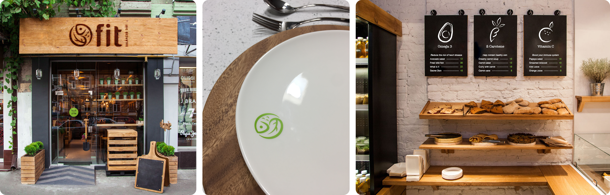
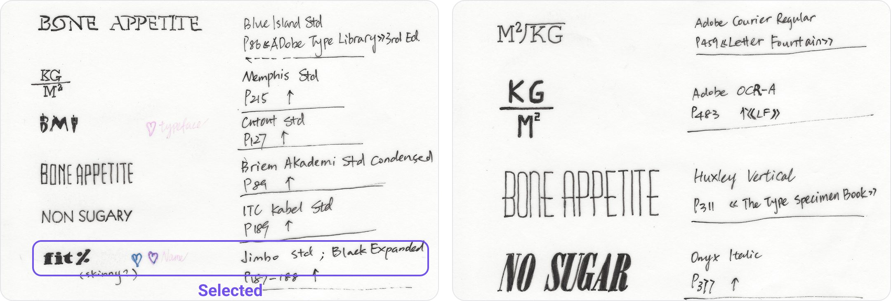
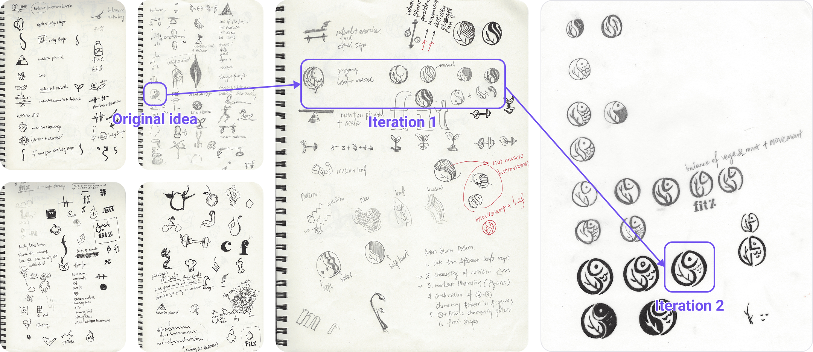
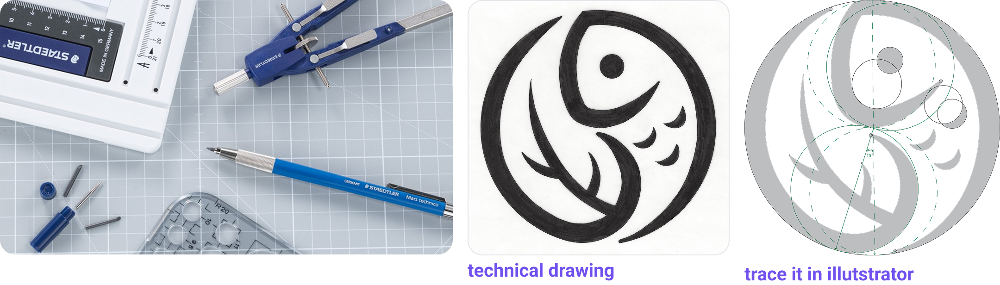
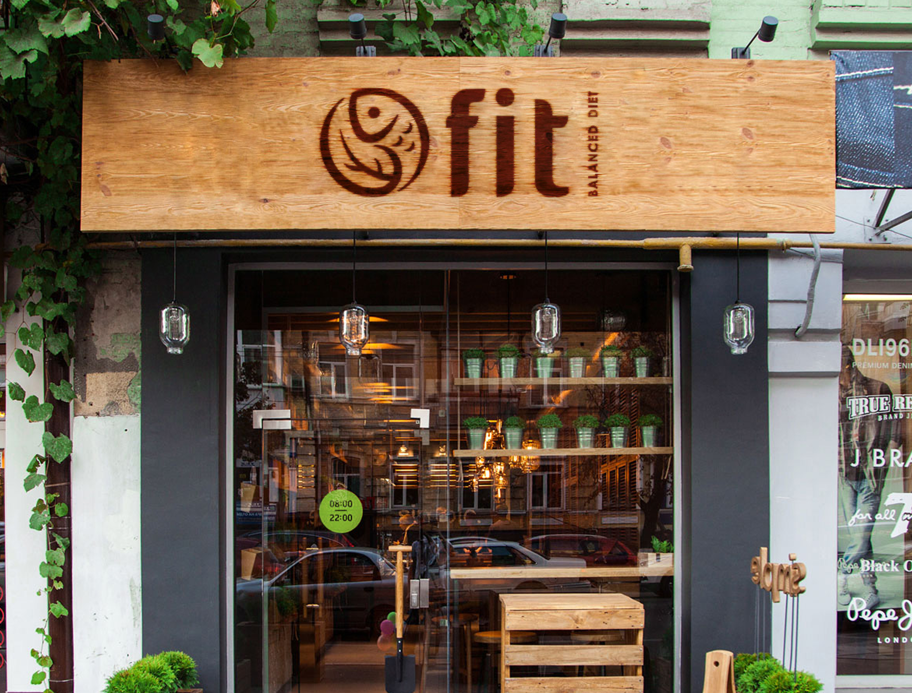
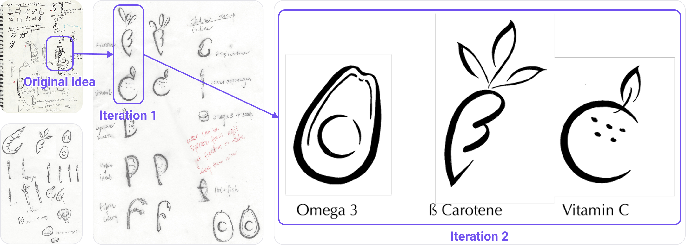
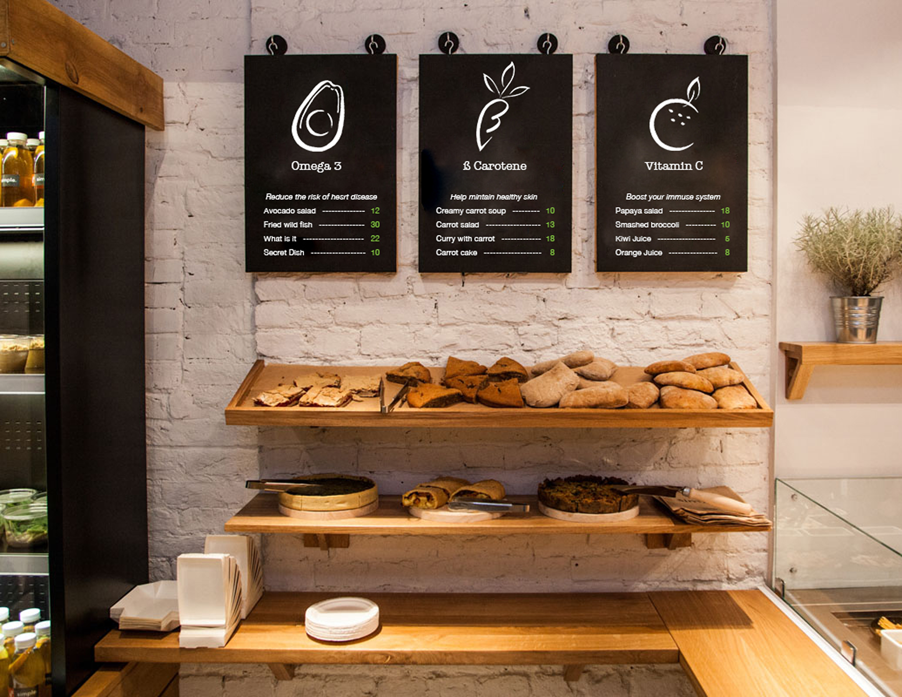

fit – restaurant
Brand identity design
Project challenge: Create a brand identity for a restaurant.
Tools
Drafting pen and compass
Adobe Illustrator
Deliverables
Wordmark
Logo
Custom icon set
Duration
3 months
Restaurant name

concept
Define the restaurant concept
Menu concept: Balanced meals featuring lean proteins, fresh produce, healthy fats, and whole grains.
Mission & Target customers: Make healthy eating convenient for busy people.
Why this concept: Research ranking the U.S. second globally in overweight prevalence inspired me to create a restaurant focused on everyday healthy eating.
wordmark
A bold take on “fit”
I explored restaurant names that conveyed balanced nutrition, using tracing paper to trace letterforms from typeface references and test the names in different styles. I selected “fit” in a heavy-weight typeface, creating a playful contrast between the substantial letterforms and the name’s meaning while giving the wordmark a strong presence on storefront signage.

logo
Development for logo
Balanced nutrition: Tai Chi meets food
I explored balanced meals and a healthy body through combinations of fit body silhouettes, healthy foods, balance symbols, and “BMI” letterforms. A Tai Chi–inspired vegetable-and-fish symbol best reflected the menu concept, so I developed variations to refine its forms and details.

Fine logo drawing process
I first drafted the logo by hand using a drafting pen and compass, then refined its geometry in Illustrator. Using construction lines, including tangents, and circular arcs trimmed from circles, I built the final vector artwork with greater precision.

Final combination of logo and wordmark
The final lockup pairs the logo symbol with the wordmark, shown here on storefront signage.

icons
Develop a unique icon set for the restaurant
Idea exploration
I created a custom icon set that embeds nutrient-related letterforms within recognizable food shapes. Through sketching and iteration, I explored how each letter could become part of the illustration while keeping the food recognizable. The final set includes:
- B + carrot: B references beta-carotene.
- C + orange: C references vitamin C.
- O + avocado: O references oleic acid.

Bringing the icons to seasonal menus
The icons extend the visual identity into seasonal menu designs, connecting the restaurant’s nutrition concept with its graphic language.
